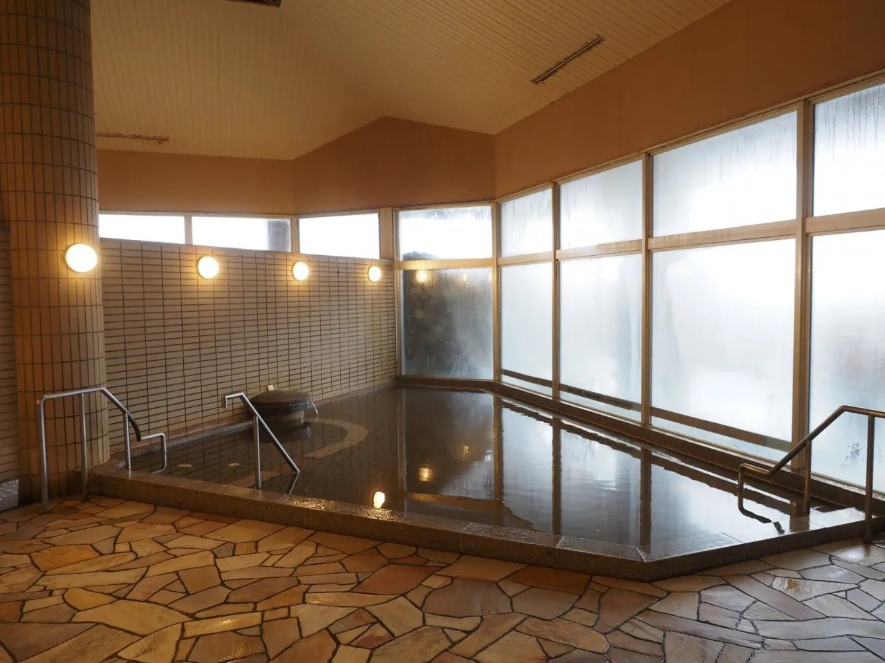
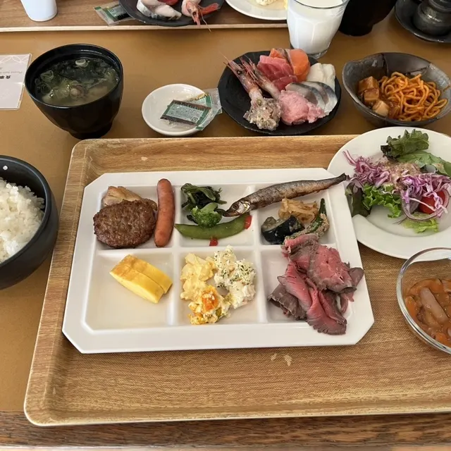
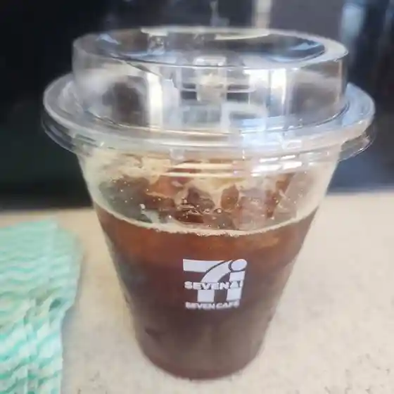
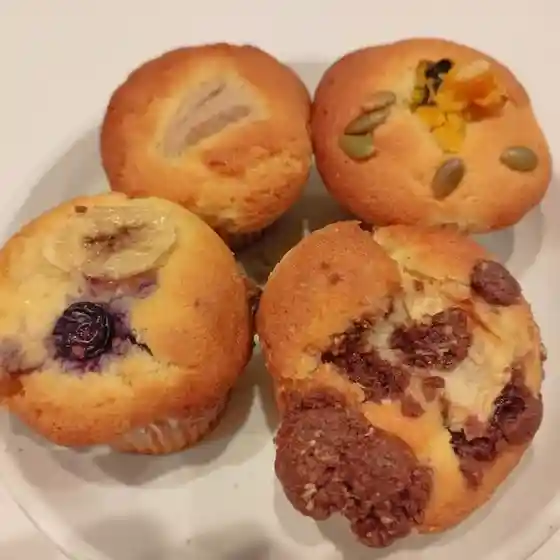
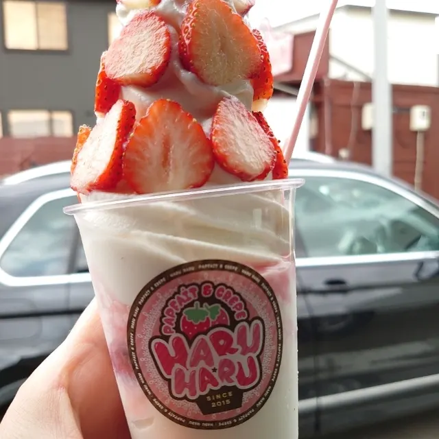
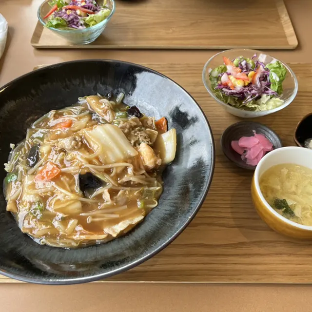
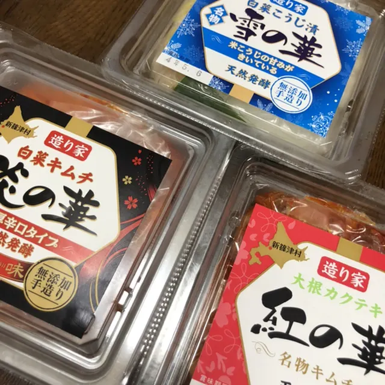
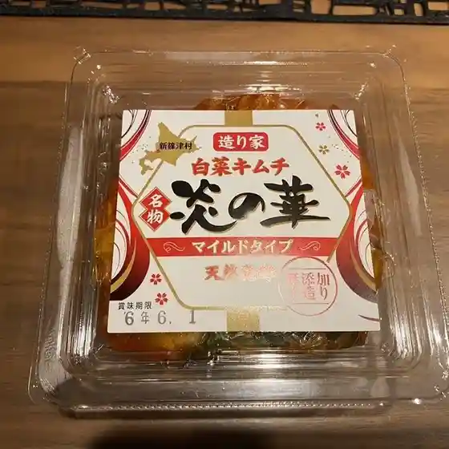

Japan / Hokkaido / Shinshinotsu
Shinshinotsu
Shinshinotsu · Hokkaido
Shinshinotsu
Highlighted on the Hokkaido map.

Stay
しんしのつ温泉 たっぷの湯
Shinshinotsu Onsen Tappu no Yu
Onsen lodging in Shinshinotsu, Hokkaido.
Dining
しんしのつ温泉 たっぷの湯

Shinshinotsu Onsen Tappuno Yu
セブンイレブン 新篠津村店

Sebun'Irebun Shinshinotsu Mura Mise
焼菓子ガブリ

Yaki Kashi Gaburi
新篠津スウィーツ ハルハル

Shinshinotsu Suuiitsu Haruharu
食事処 いくや
Shokuji Tokoro Ikuya
レストラン もみの木

Resutoran Momino Ki
造り家

Tsukuri Ie
道の駅しんしのつ

Michi No Eki Shinshinotsu
しんしのつ産直市場
Shinshinotsu Sanchoku Shijou
太門
Tamon
セイコーマート 新篠津店
Seikoomaato Shinshinotsu Mise
ろばた
Robata
しんしのつごはん こめっさく
Shinshinotsugohan Komessaku
フラミンゴカフェ
Furamingokafe
イルラーゴ
Iruraago
ニューしのつゴルフ場
Nyuu Shinotsu Gorufu Ba
Sights
Shinshi no Tsu Onsen
Shinshi no Tsu Onsen